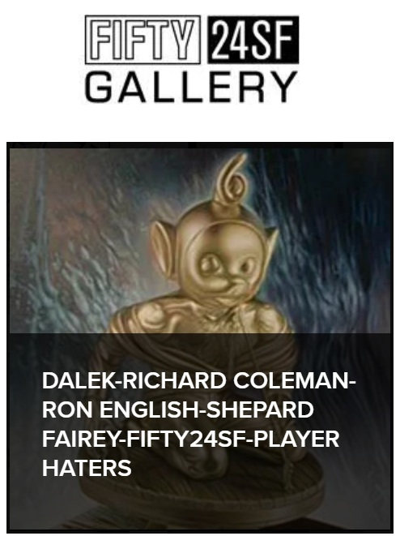
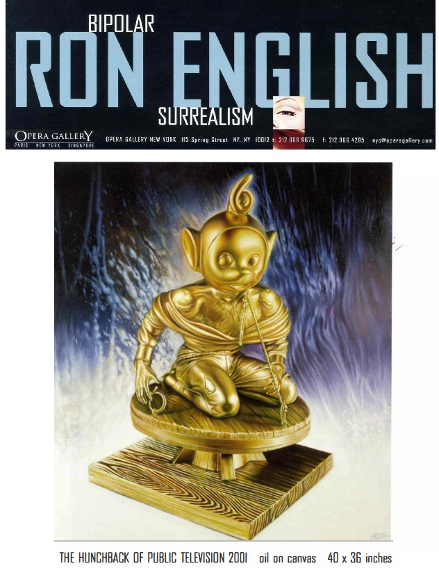

Exhibitions
Bipolar Surrealism, Opera Gallery, New York, New York, US, May 24–June 11, 2001.

Player Haters, Fifty24 Gallery, San Francisco, California, US, January 4, 2002.
Playerhaters: Don't Hate the Game, Hate the Players, MOCA DC, October 19–November 30.


Literature
Bipolar Surrealism (New York: Opera Gallery, 2001), exhibition catalogue.
Juxtapoz Magazine, November–December 2002.

Ancillary Documentation



